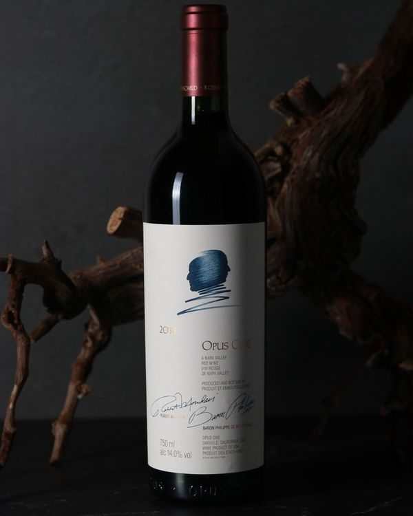
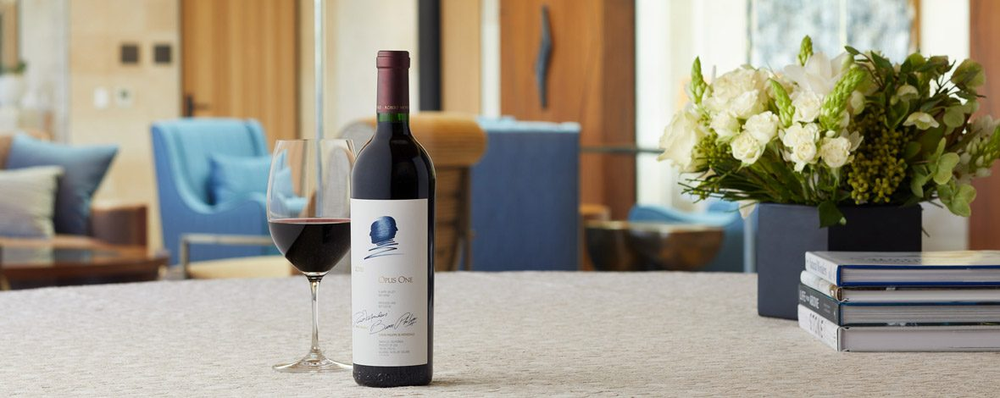
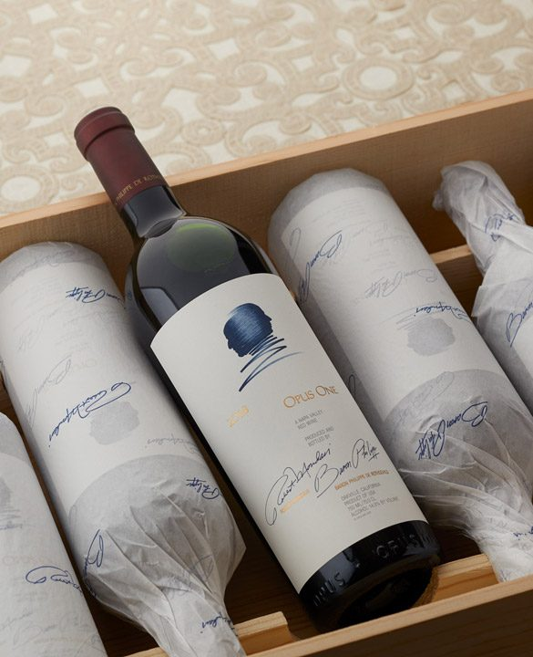

오퍼스 원(Opus One), 왜 모두가 한 번쯤 마셔보고 싶어 할까?
오퍼스원 2022는 보르도와 나파 밸리가 함께 만든 나파 밸리 오크빌의 까베르네 소비뇽 중심 보르도 스타일 블렌드예요. 프렌치 오크에서 숙성한 풀바디 레드로, 인생의 특별한 순간에 여는 와인으로 많이 선택돼요.
와인을 좋아한다면 누구나 한 번쯤 들어봤을 이름, 오퍼스 원(Opus One).
'미국 최고의 와인', '죽기 전에 마셔봐야 할 와인'이라는 수식어가 따라붙는 이 와인은 단순히 비싼 와인이 아닙니다. 미국 와인의 역사를 바꾼 상징적인 존재이자, 지금도 전 세계 컬렉터와 애호가들의 사랑을 받고 있는 와인입니다.

기본 정보
- 생산지 : 미국 캘리포니아 나파 밸리, 오크빌(Oakville)
- 생산자 : Opus One Winery
- 주요 품종 : 카베르네 소비뇽을 중심으로 메를로, 카베르네 프랑, 프티 베르도, 말벡을 블렌딩 (빈티지별 비율 상이)
- 스타일 : 풀바디 레드 와인
- 숙성 : 프랑스산 새 오크 배럴에서 약 18개월 숙성 후 병입
- 권장 음용 시기 : 출시 후에도 훌륭하지만, 10~20년 이상 숙성하면 더욱 복합적인 매력을 보여줍니다.
오퍼스 원의 탄생
1979년, 캘리포니아 와인의 선구자 로버트 몬다비(Robert Mondavi)와 프랑스 보르도 1등급 샤토 샤토 무통 로칠드(Château Mouton Rothschild)의 소유주 바롱 필립 드 로칠드(Baron Philippe de Rothschild)가 함께 시작한 프로젝트가 바로 오퍼스 원입니다.
당시만 해도 최고급 와인은 프랑스에서만 나온다는 인식이 강했지만, 이들은 캘리포니아에서도 세계적인 수준의 와인을 만들 수 있다는 가능성을 증명하고자 했습니다.
그 결과 탄생한 오퍼스 원은 오늘날 미국을 대표하는 프리미엄 와인으로 자리 잡았습니다.

테이스팅 노트
👃 향(Aroma)
잔을 돌리면 블랙커런트, 카시스, 블랙체리, 자두 같은 검은 과실 향이 풍부하게 올라옵니다.
이어 바이올렛, 장미 같은 은은한 꽃향기와 함께 바닐라, 다크초콜릿, 에스프레소, 시가박스, 삼나무, 흑연, 감초 등의 복합적인 향이 층층이 펼쳐집니다.
숙성이 진행될수록 트러플, 말린 허브, 가죽과 같은 깊고 우아한 향이 더해집니다.
👄 맛(Palate)
풍부한 과실감이 중심을 잡아주면서도 산도와 타닌이 매우 정교하게 균형을 이룹니다.
입안에서는 블랙베리와 카시스의 농축된 풍미, 다크초콜릿과 에스프레소의 뉘앙스가 이어지며, 벨벳처럼 부드러운 타닌이 긴 여운을 만들어 냅니다.
화려하면서도 과하지 않고, 힘과 우아함을 동시에 갖춘 스타일이 오퍼스 원의 가장 큰 매력입니다.
Finish
여운은 매우 길고 섬세합니다.
검은 과실의 달콤함과 오크에서 오는 스파이스, 미네랄, 은은한 토스티한 풍미가 오랫동안 이어지며 시간이 지날수록 새로운 향이 계속 나타나는 것이 특징입니다.
어떤 음식과 잘 어울릴까?
오퍼스 원은 풍부한 구조감과 복합미를 가진 와인인 만큼 진한 풍미의 요리와 좋은 궁합을 보여줍니다.
- 드라이에이징한 소고기 스테이크
- 양갈비
- 소고기 안심
- 오리 가슴살
- 송로버섯을 곁들인 요리
- 숙성 체더나 콩테 같은 하드 치즈
한 줄로 표현한다면
"보르도의 우아함과 나파 밸리의 풍부함이 가장 아름답게 만난 와인."
오퍼스 원은 단순히 가격이 높은 와인이 아닙니다. 미국과 프랑스, 두 와인 문화가 만나 탄생한 상징적인 작품이며, 지금도 세계 최고 수준의 프리미엄 와인으로 인정받고 있습니다.
특별한 기념일, 중요한 선물, 혹은 언젠가 꼭 한 번 경험해 보고 싶은 와인을 찾고 있다면 오퍼스 원은 그 기대를 충분히 만족시켜 줄 한 병입니다.

이 글은 땡큐와인 네이버 블로그에 먼저 올린 글이에요.